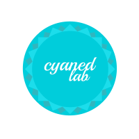
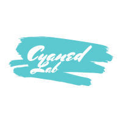
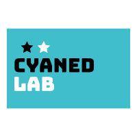

- Johnny Mercer
This website is now under renovation starting August, 2020. As long as you are seeing this, the content of this site will change fairly rapidly and frequently. Therefore, your feedback will be very much appreciated, if you have any idea to share, please contact me via Instagram.
Preface
Welcome. I’m Shu. Glad you came.
“Non sunt multiplicanda entia sine necessitate.” I believe in Occam’s Razor, so I built this site in the simplest way possible to only show the essentials for you to know about me, all the cool things I’m into, and, hopefully, to discover any resemblance between us, so that we could be friends.
Life is short, so I try to spend my time wisely, and look forward to experiencing different forms of “being a human”: as a mathematician, an engineer, a programmer, a skater, a snowboarder, a guitar player, a producer, a traveler, and so many others. I’m actively exploring my interests and various new things, and refuse to settle with anything, even those I’ve been always good at.
The name “CYANED” comes from cyan, the color of shallow water over a sandy beach, and the independent record label of Frank Ocean (“BLONDED”) - he’s the inspiration of all my creativity and the one who taught me how to be honest with myself.
Now, maybe it’s better to spread things out a bit so you can walk around on this spacy canvas and see if anything catches you.

Musical & Visual
Music has always been the backbone of my energy - I need good tracks much more than a morning coffee shot. My interests cover a wide range of sounds, from the old-school Jazz by Keith Jarrett to the most aggressive experimental by Arca, but in general, I focus mainly on Contemporary R&B and Alternative Rock, which I also learn to comprehend further and write some of my own.
I was raised in a family of western pop music fans - in my dad’s study room there are tons of vinyl records and CDs by Michael Jackson, Madonna, The Beetles, and Eagles, and on the DVD player screen on his old S-class, the legendary Bucharest Concert was played more than hundreds of times, if not thousands - that’s also where I learned some of MJ’s iconic moves (i.e. Billie Jean Solo and Moon Walk) and performed them in front of thousands of audiences in my high school and college.
The golden time of Dance Pop and Neo Soul marked my childhood and adolescence. In college I was then greatly inspired by Kanye West (like Elon Musk) and started to fall in love with modern music production techniques. With the splendid production of the one and only MBDTF teaching me how soundtracks should be created and polished, the alternative classic Blonde/Endless opened a whole new world of making emotional bond between the artist and the audiences. Now to me music creation is more than showing off complex chord progressions - it’s “feeling each other by hearts”.
My idea of integrating musical experience with visual arts originally came from the luxuriant Bon Iver. Besides making Dream Pop snippets, I’m also exploring ways of combining video cuts with songs - a glimpse of my work below (links provided for non-original elements).
“At the Mercy of You” (Short Ver.)
Musical: Bridge of “Deathwish (Remixed)”
Visual: Mini re-edit of “Your Name”“The Gyo-en Love Story” (Short Ver.)
Musical: Outro of “Fold (the Love)”
Visual: Mini re-edit of “The Garden of Words”“Go Interstellar with Me”, Visual for “Cave Pearls”
Musical: “Can I Have the Day with You” by Sam Ock
Visual: Mixed cuts from my ski trips in 2018 & 2019
I play electric guitar, keyboard, and mess with synthesizers a bit. In terms of music tech, my fav has always been Logic, LilyPond, and Sonic Pi. I’m now working on a mixtape/EP under the project name “C2CY” (pronounced as “see both sides”). For more details about my work in musical and visual production in general, please see channel “Aesthetics”.

Programming & Hacking
I code, for a living and for fun, as a devout disciple in the immortal GNU/Linux community. Technically I’m still a newbie - I stayed in macOS until my graduation from MIT - that was such a pity as MIT-CSAIL stands at the very center of the GNU world and hacker culture, I felt guilty I didn’t get Linux (if not Arch Linux) installed the moment I first stepped into the Cambridge tech heaven. I tried to catch up, and now all of my computing devices are running Linux (with different distros though) and I feel better and more love everyday.
I was never a geek. I got my first personal laptop (a ThinkPad T60 powered by Windows XP) when I was 12, and I did everything but coding at that time (still technically challenging though, like cracking bootleg PMDG and Aerosoft plug-ins on FSX) - there’s no engineer in my family, nobody told me how beautiful and fun coding could get. After completely giving up on Windows Vista due to its terrible performance and design, I switched to macOS and finally started to code in Python and C++ for course projects in statistical analysis and testing simple trading strategies. At that time, writing scripts and classes in IDEs seemed pretty terrifying and the CLI was just like hell to me. Programming was neither enjoyable nor fun to me - until I learned vim (if you are an emacs user, can we shake hands first?).
Using vim was the milestone where coding suddenly turned from a serious and tedious job to a real joy to me. I quickly got addicted to it and couldn’t stop exploring more tips, tricks, and fancy plug-ins. After vim and vimium completely taking over my texting and browsing, I couldn’t remember how life was back when I used a mouse to click around to debug and was not enjoying programming at all.
Naturally, as I went further down the road, I couldn’t get enough with the customizability of macOS, therefore I switched - it’s funny but true - boosting productivity was not the main motivation for me to go for Linux, it was the god-like ability/freedom to build and custom anything you want in your system. “As you wish” is the most sexy sentence anything could possibly say.
I have both Arch-based and Debian-based machines serving as my daily drivers at the same time - honestly, normally I just don’t feel much difference, though pacman is indeed faster and smoother (and the rolling system is of course much sexier), apt is good enough for me and sometimes I rather go for stability when I just want to enjoy my coffee. My terminal experience is powered by zsh, ranger, and several other cool CLI tools - they are all very elegantly designed and nurtured by the ethernal open-source community. As a total minimalist and simplist, I also quitted DE completely - GNOME and KDE Plasma look awesome, but they just have too much calorie for me - most of the time I only stay in terminal and Chrome held by a fully customized i3wm. All of my systems are extremely lightweight and usually take <500MB of RAM in idle. If you feel like we are on the same boat (even if you are using emacs), feel free to check out my dotfile repo and other toy hacks on my GitHub. If you have a dotfile repo, please share it with me!
In my fulltime job, I code in Python and R for Quant Research in Portfolio Optimization and Machine Learning. In my spare time, I code for fun and make things easier in my life. Usually, I can get things going with Python, Julia, and zsh scripts. I’m now very into Edge AI and messing with some cool hardware and dev-boards like RPi 4B and Jetson Xavier NX. Recently, with the help of a Google Coral TPU, I successfully made an automatic DSLR module that can take high-res photos for aircrafts flying by around my apartment by itself. This is merely a laziness-driven project, manual aviation photography is tiring, but who can resist to let a KLM A333 fly away without giving that beauty a shot?
For more details about my work in coding and research in general, please see channel “Deductivism”.

Mathematics & Research
Skateboarding & Snowboarding
More